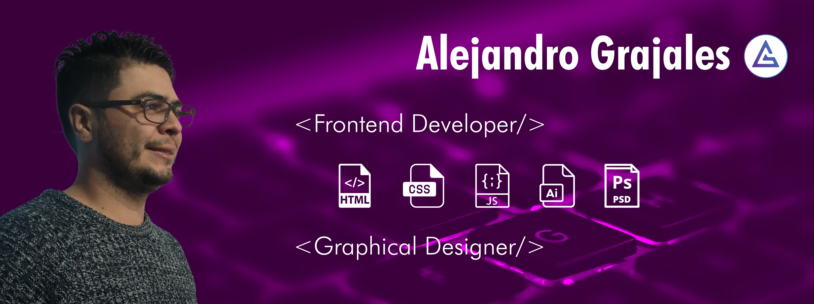

constantly looking for new learning and passionate about the IT world.
| Comand | Description |
|---|---|
| cd | Navigate between folders |
| mkdir | Create folders |
| ctrl + c | Stop processes in console |
| ls | Show available folders |
| pwd | Shows the location of where I am |
| Alias | Description |
|---|---|
| alias cl="clear" | Clear the console |
| alias rm="trash" | Remove file or folder |
Graphic designer and music graduate with professional experience in work environments, passionate about programming.
I am an enterprising and innovative person; I consider myself selftaught since I have promoted projects without any prior knowledge, I demand myself in order to acquire the necessary tools to use and carry out the proposed work.